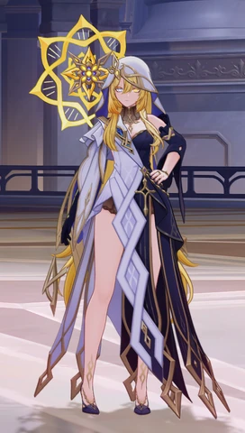

Teyvat & Unknown · Character Records
Rhinedottir
Rhinedottir, or Gold, is a Khaenri’ahn alchemist, Hexenzirkel witch, and one of the Five Sinners. She created Albedo and is linked to Durin; after devouring Naberius, she shares a being with the Ruler of Life. Her Version 7.1 account of the Third Descender is explicitly framed as a story, leaving key conclusions unconfirmed.

Gold, an alchemist of Khaenri’ah
Rhinedottir is also known as Gold. The game associates her with Khaenri’ahn Khemia, the Hexenzirkel, and the Five Sinners. She is the alchemist who created Albedo and is connected to Durin and other dangerous forms of artificial life.
Albedo’s character stories and the Dragonspine material provide separate pieces of evidence about her creations. They do not reveal one complete process or prove that every creature associated with her was made for the same purpose.
The Hexenzirkel and the Five Sinners
Rhinedottir holds the Hexenzirkel seat R, with the title Sage-Witch. That affiliation places her among the circle’s members, but does not mean that she shares every member’s plans or methods.
She is also one of Khaenri’ah’s Five Sinners, alongside Vedrfolnir, Surtalogi, Hroptatyr, and Rerir. Later records describe the five as taking shares of Abyssal power, but their paths diverge; the label does not establish a current unified organization.
Rhinedottir and Naberius
In the Paralogism Archon Quest, Albedo reveals that Rhinedottir devoured Naberius, the Ruler of Life, and that they became one. The description is about a shared being, not a second independent Naberius walking elsewhere.
Chapter VII makes that relationship more direct: Rhinedottir appears as the Ruler of Life, and Naberius speaks from within her as a distinct voice. The story shows their disagreement at times, while keeping their joined state clear.
Her Snezhnaya appearance
In Chapter VII Act III, Rhinedottir appears after the Tsaritsa’s effort to gather Seals of Life draws the Ruler of Life’s attention. Rhinedottir says she released a failed experiment meant to destroy “that which should not exist” so she would not have to get involved. The story does not identify that phrase with a separate named entity in the exchange.
She refuses to help the Tsaritsa fight Ronova, but accepts an invitation to Zapolyarny Palace to exchange information about Asmoday. This is a direct statement of her position in that conflict; it does not reveal all of her motives or long-term plans.
Her account of the Third Descender
At the palace, Rhinedottir says she reviewed Celestia’s records about the Third Descender incident. Her story says that the Belyi Tsar persuaded the Tsaritsa, then a court herald, to open a gate to the Abyss alongside the Third Descender. The Heavenly Principles erased the Tsaritsa, and the Third Descender later bargained for her restoration and for protection of his descendants.
Rhinedottir says his remains were divided into seven pieces to form the Gnoses, that Irminsul was used to erase traces of him, and that a curse would activate if the Heavenly Principles broke their promise. These are claims made in her story about records she read; the scene does not independently show the historical events.
Separate confirmed statements from inference
The Tsaritsa infers that the Cataclysm triggered the Third Descender’s curse and caused the Heavenly Principles to fall asleep. Rhinedottir responds that she was telling a story, not answering a question. The dialogue leaves the connection unsettled rather than confirming the Tsaritsa’s inference as fact.
The story gives Rhinedottir’s account of the Khaenri’ahn bloodline and the Gnoses’ origin, but it does not name the Third Descender. The equation with Saarelainen is a strong cross-source interpretation, not a name spoken in Rhinedottir’s account. Keep those distinctions visible when connecting her revelations to other lore.
This is an original CoreGG reading guide, not an official HoYoverse article or a reproduction of the game text. Source links below identify the records used so you can check the original context.
Sources & references
Check these sources for the original game text and reference trail.